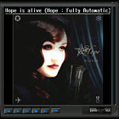
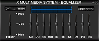
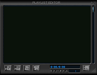
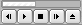

XMMS
Archivierte Anleitung
Dieser Artikel wurde archiviert, da er - oder Teile daraus - nur noch unter einer älteren Ubuntu-Version nutzbar ist. Diese Anleitung wird vom Wiki-Team weder auf Richtigkeit überprüft noch anderweitig gepflegt. Zusätzlich wurde der Artikel für weitere Änderungen gesperrt.
Dieser Artikel wurde für die folgenden Ubuntu-Versionen getestet:
Zum Verständnis dieses Artikels sind folgende Seiten hilfreich:
XMMS, das X MultiMedia System  ist ein beliebter Audio-Player unter Linux/Unix, der viele verschiedene Audiodateien abspielen kann. XMMS ist im Aussehen dem Programm Winamp nachempfunden und mit dessen classic Skins kompatibel. Der Player ist in der Standardinstallation eine einfache Abspielsoftware mit geringen Hardware-Anforderungen, kann aber je nach Bedarf mit einer Vielzahl von Erweiterungen für spezielle Anwendungsfälle zu einem äußerst umfangreichen Audio-Player ausgebaut werden.
ist ein beliebter Audio-Player unter Linux/Unix, der viele verschiedene Audiodateien abspielen kann. XMMS ist im Aussehen dem Programm Winamp nachempfunden und mit dessen classic Skins kompatibel. Der Player ist in der Standardinstallation eine einfache Abspielsoftware mit geringen Hardware-Anforderungen, kann aber je nach Bedarf mit einer Vielzahl von Erweiterungen für spezielle Anwendungsfälle zu einem äußerst umfangreichen Audio-Player ausgebaut werden.
Installation¶
Ab Ubuntu Hardy Heron befindet sich XMMS nicht mehr in den Paketquellen von Ubuntu. Gründe dafür gibt es einige. XMMS wurde vor mehr als einem Jahrzehnt im Jahr 1997 entwickelt, als Cross-Plattform Audioplayer und als Antwort auf den Windows Audioplayer Winamp. XMMS basiert auf der alten Graphikbibliothek GTK1, welche schon vor einiger Zeit von GTK2 abgelöst wurde. Die Entwickler von XMMS haben aber ihre Software nie auf die neue Bibliothek angepasst. Ursache dafür ist einmal, dass viele der Addons und Plugins auf dieser alten Bibliothek beruhen und dann nicht mehr kompatibel zu XMMS wären. Und die Zweite ist, dass der Quellcode von XMMS - gelinde ausgedrückt - ein komplett unstrukturiertes Chaos ist. Dies ist ebenfalls die Ursache, weswegen es sehr schwer ist, XMMS weiterhin zu warten.
Diesen Umständen wurde Rechnung getragen und XMMS wurde aus den Ubuntu Paketquellen entfernt. Die Nutzer brauchen aber keine Angst zu haben, ohne einen guten Audioplayer dazustehen. Denn zum einem gibt es Audacious, der ein auf GTK2 portierter und Quellcode bereinigter Fork vom BeepMediaPlayer ist, welcher seinerseits ein Fork von XMMS gewesen ist. Auf der anderen Seite gibt es aber auch xmms2 plus GTK2-Frontend gxmms2 in den offiziellen Paketquellen und natürlich noch eine ganze Anzahl anderer, alternativer AudioPlayer für Linux.
Und zu guter Letzt für diejenigen, die trotz der Umstände, dass XMMS auf veralteten Bibliotheken beruht, so gut wie nicht mehr weiterentwickelt wird und der Tatsache, dass es neuere Alternativen gibt, nicht von diesem Audioplayer lassen können: es besteht immer noch die Möglichkeit, ihn selbst zu kompilieren.
Konfiguration¶
Im Folgenden wird auf einige Konfigurationsmöglichkeiten eingegangen, wobei es noch eine Vielzahl weiterer Optionen gibt.
Audio-CD¶
Damit XMMS direkt nach dem Einlegen einer Audio-CD automatisch mit der Wiedergabe beginnt, muss man unter "System -> Einstellungen -> Wechseldatenträger und -medien -> Unterhaltungsmedien -> Musik-CDs" den folgenden Befehl eingeben:
xmms -e -p /dev/DeinLaufwerk
Aussehen¶
Da das XMMS-Standardskin nicht jedem zusagt, können bei dem Player neben den XMMS-Skins auch Skins von den Playern Winamp (nur Classic Skins!) oder BMP hinzugefügt werden. Zahlreiche Skins sind auch auf www.gnomelook.org zu finden. Die Skins können gepackt oder als .wsz-Datei vorliegen. Wer z.B. das typische Winamp-Layout haben möchte (s. Abb.), findet dies über die Suchfunktion von Winamp unter der Bezeichnung "Winamp5 Classified" (Direktzugriff). Interessant dürfte auch der an die Farbgebung von Ubuntu angepasste Ubuntu XMMS M0D auf gnomelook.org sein.
Nach dem Download muss der Skin einfach in das versteckte Verzeichnis ~/.xmms/Skins kopiert werden.
Soll das Skin allen Nutzern auf dem Rechner zur Verfügung stehen, muss die Datei in das Verzeichnis /usr/share/xmms/Skins kopiert werden (Administratorrechte!).
Erweiterungen¶
|  |
| © HOPE |
Für XMMS gibt es zahlreiche Erweiterungen (Plugins), die über die XMMS-Einstellungen aktiviert und konfiguriert werden. Dazu öffnet man die Einstellungen mit der Tastenkombintation Strg + P oder öffnet das Kontextmenü mit einem Rechtsklick in den oberen Bereich des XMMS-Hauptfensters, wo man den Eintrag "Optionen -> Einstellungen" auswählt.
Im Einstellungsfenster der Erweiterungen gibt es die Unterkategorien: Audio-I/O-Plugins, Effekt-Plugins, Allgemeine Plugins, Visualisierungs-Plugins, Optionen sowie Schriftarten und Titel. Die installierten Plugins befinden sich in der jeweiligen Rubrik. Nach der Installation muss meist die Option Plugin verwenden durch ein Häkchen aktiviert werden.
Über die Paketverwaltung können weitere Erweiterungen installiert werden und auf der Projektseite sind noch mehr Plugins aufgeführt, die bisher nicht als Pakete zur Verfügung stehen, hier folgt eine unvollständige Übersicht über einige beliebte Erweiterungen, die in den Ubuntu-Quellen verfügbar sind.
| Erweiterungen im Überblick | |||
| Plugin | Sektion | Art | Funktion |
| xmms-crossfade | universe | Ausgabe | Überblendung von einem Lied zum nächsten |
| xmms-coverviewer | universe | Allgemein | Cover Anzeige (Eigene Cover können z.B. mit EasyTAG eingebunden werden.) |
| xmms-jack | universe | Ausgabe | XMMS-Client für den jack-Soundserver |
| xmms-liveice | multiverse | Output | Das Audiosignal an Internetradio Server senden |
| xmms-scrobbler | universe | Allgemein | LastFM-Anbindung nur mit LastFM-Account nutzbar (kein LastFM Player!) |
| Winamp Visualization Plugins | - | Output | Winamp Visualization Plugins unter XMMS nutzen. |
Visualization¶
Um die Erweiterung nutzen zu können benötigt man Wine. Nun von der Entwicklerseite die Erweiterung xmms-winamp-0.4a.tar.gz  herunterladen, entpacken [4] und kompilieren [5].
herunterladen, entpacken [4] und kompilieren [5].
In der README des heruntergeladenen Paketes finden sich Informationen zur Installation der Visualisierungen unter Wine:
"Install your Winamp plugins using "wine <myplugin>.exe", then configure xmms-winamp (through the settings>Visualization Plugins tab), choosing the correct path (depending on your WINE configuration) and filename of the DLL. Now you can enable the plugin."
Equalizer¶
 Um den Equalizer zu öffnen (falls noch nicht geschehen) im Hauptfenster auf "EQ" klicken.
Nun öffnet sich dieser. Um ihn zu aktivieren einfach auf "ON" klicken. Nachdem dies erledigt ist, die Regler nach dem jeweiligen Geschmack anpassen. Beim Beenden des Programms speichert XMMS die Einstellungen ab.
Um weitergehende Informationen über die Verwendung von "AUTO" und "Preset" zu erfahren, lohnt sich ein Besuch der Projektseite. Hierbei handelt es sich um die Möglichkeit den EQ einem einzelnen Song anzupassen sowie um den Im- und Export von WinampEQF-Dateien. Voreinstellungen können von xmms.org heruntergeladen werden. Dieses in den Ordner ~/.xmms/ kopieren und dort entpacken [4].

Playlist¶
Der Abspiellisten Editor wird durch einen Klick auf "PL" erreicht. Im unteren Fensterabschnitt befinden sich fünf Knöpfe, welche je ein neues Unterverzeichnis enthalten.
"+ File" enthält die Optionen: CD hinzufügen, Internetadresse abspielen sowie Dateien hinzufügen
"- File" verschiedene Optionen um Dateien aus der Liste zu löschen
"SEL ALL" an/abwählen von Dateien
"MISC OPT" Sortierung der Liste nach unterschiedlichsten Kriterien
"LOAD LIST" Erstellung einer neuen leeren Liste sowie speichern und laden der Liste(n)
Nachdem einige Dateien der Playlist hinzugefügt worden sind empfiehlt es sich diese Liste abzuspeichern, damit beim nächsten Mal, wenn diese angehört werden soll, nicht erst die Daten gesucht werden müssen.
Es ist auch möglich neben XMMS einen Dateimanager geöffnet zu haben und von dort die Titel per Drag and Drop in die Playlist einzureihen.
Tipps & Tricks¶
Internetradio¶
Eine sehr einfache Methode Streamadressen zu finden, ist die Installation von Streamtuner2. Damit lassen sich zahlreiche Radiosender komfortabel auswählen, um sie mit XMMS abzuspielen.
Um als Moderator oder DJ selbst den Stream an den Server zu senden, steht das Plugin xmms-liveice zur Verfügung. Mit einem weiteren Plugin, xmms-jack kann auch mittels jack über Oddcastv3-Jack oder Darkice an Internetradio Server gesendet werden.
playground¶
 Mit der Erweiterung playground (universe, [2]), kann dem GNOME-Panel eine kleine Anwendung hinzugefügt werden, welche die Steuerung des Players mit den Basisfunktionen erlaubt.
Nach der Installation muss das Plugin noch aktiviert werden. Dazu im Menü unter "Preferences -> Plugins" das pgxmms.so Plugin auswählen.
Umlaute richtig anzeigen lassen¶
Es kann vorkommen, dass die Umlaute in der Playlist nicht richtig angezeigt werden. Will man diese jedoch anzeigen lassen, so muss man mit der rechten Maustaste auf den Player klicken, dann Optionen und dann Einstellungen wählen (bzw. Strg + P ). Nun den Reiter "Schriftarten" auswählen. Hier bei Optionen "Verwende Fontsets (Einschalten für Mehrbyte-Charset-Unterstützung)" aktivieren und das ganze übernehmen.
Dateityp / Ordner mit XMMS verknüpfen¶
Um einen bestimmten Dateitypen z.B. OGG mit XMMS zu verknüpfen oder gleich das komplette Verzeichnis in XMMS abzuspielen, müssen folgende Einstellungen vorgenommen werden,
Tastenkürzel¶
| XMMS | |
| Alt + E | Playlist ein/ausblenden |
| Alt + G | Equalizer ein/ausblenden |
| Alt + S | Skinbrowser |
| Strg + A | Programm immer im Vordergrund |
| Strg + S | XMMS auf allen Arbeitsflächen |
| Strg + P | Einstellungen am Programm vornehmen |
| Strg + D | Doppelte Größe |
| Strg + Q | Programm beenden |
| Wiedergabe | |
| X | Wiedergabe |
| B | nächster Track |
| Z | vorheriger Track |
| C | Pause |
| V | STOP |
| J | Suchfunktion |
| Strg + Z | Start der Playlist vom Anfang |
Problemlösung¶
XMMS friert ein¶
Friert XMMS ein, sobald man eine Audiodatei abspielen will, liegt dies in der Regel an einem falschen Ausgabe-Plugin. Unter "Optionen -> Einstellungen -> Ausgabe-Plugin" muss die Ausgabe auf den Soundserver geleitet werden, den man nutzt.
Ein Audioformat wird nicht abgespielt¶
In diesem Fall fehlt entweder der entsprechende Audio-Codec, eine spezielle Erweiterung oder es handelt sich um eines der wenigen Formate, die nicht unterstützt werden.
XMMS verhindert den Sound anderer Programme¶
Vielleicht ist als Ausgabe-Plugin der veraltete OSS-Treiber eingestellt, der in den meisten Fällen nur einen Sound an einen Ausgang weiterleiten kann. Durch "Rechtsklick auf den XMMS-Player -> Optionen -> Einstellungen -> Audio-I/O-Plugins -> Ausgabe-Plugins" kann man das ändern. Empfehlenswert ist z.B. das ALSA-Plugin.
- Erstellt mit Inyoka
-
 2004 – 2017 ubuntuusers.de • Einige Rechte vorbehalten
2004 – 2017 ubuntuusers.de • Einige Rechte vorbehalten
Lizenz • Kontakt • Datenschutz • Impressum • Serverstatus -
Serverhousing gespendet von